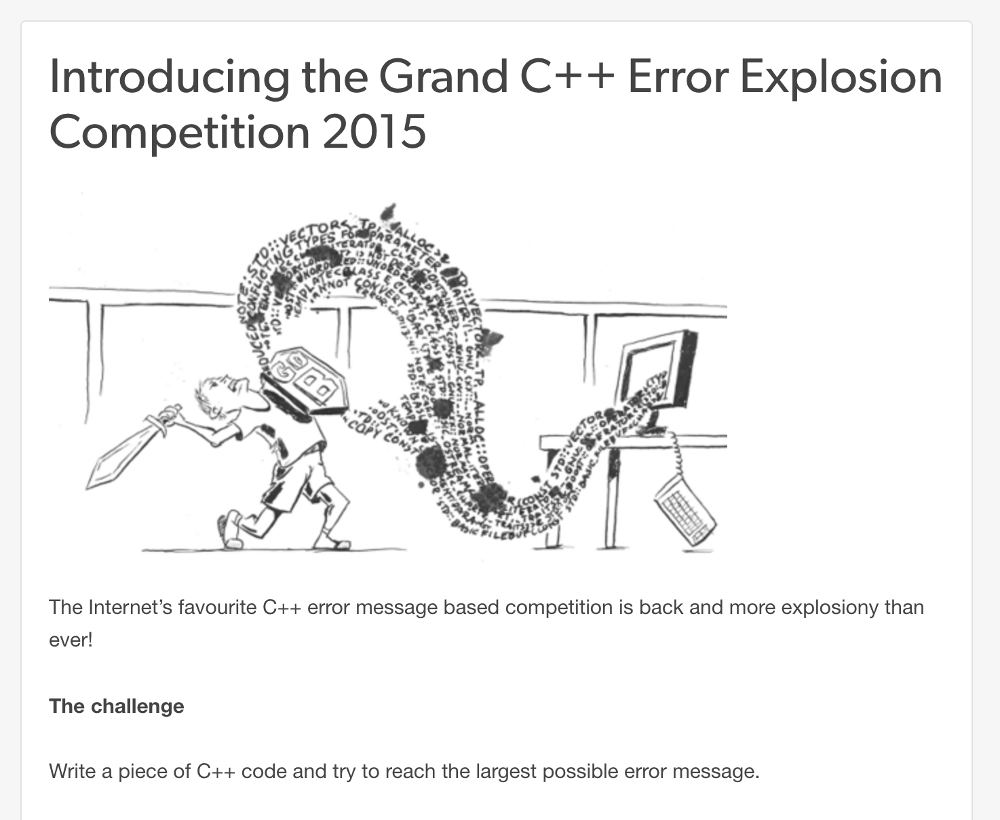
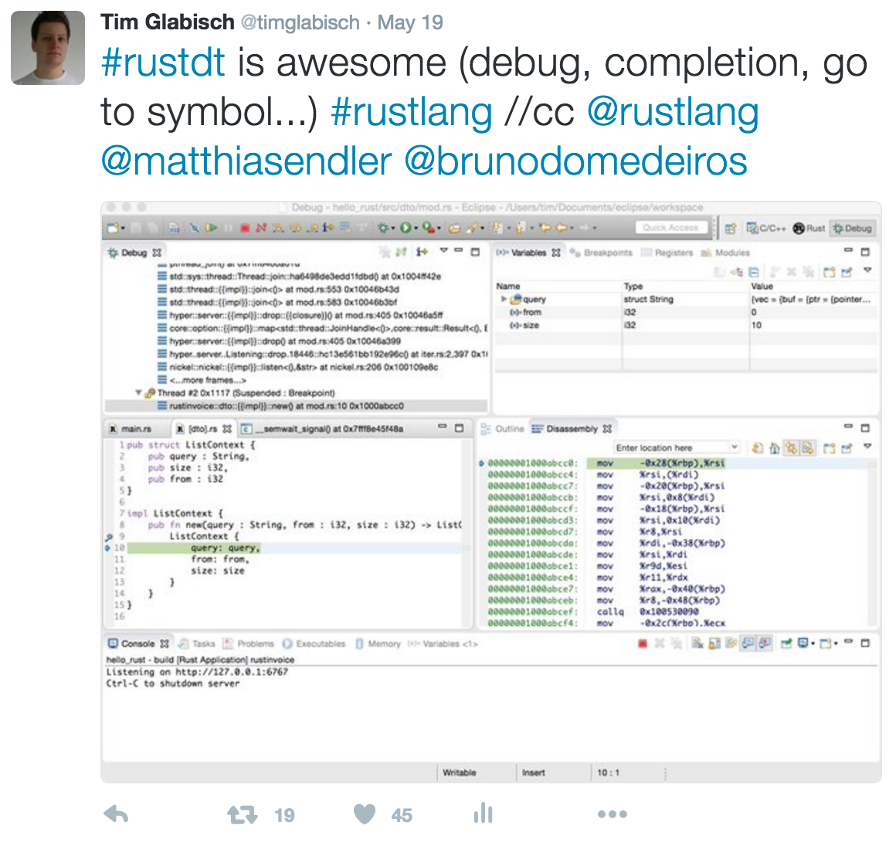

can't read?
better come closer =)
echo "{K]X^\31\31EYG_Q\31"^"".M_PI;
Rust for PHP devs


@timglabisch

pub fn main() {
println!("Hello PHPUG!");
}
echo sprintf("%s", "Hello PHPUG!");
pub fn main() {
let foo = "bar";
println!("Hello {}", foo);
}
pub fn greet(name : String) {
println!("Hello {}", name);
}
pub fn main() {
let name = "PHPUG".to_string();
greet(name);
}
function greet(string $name) {
echo sprintf(
"Hello %s",
$name
);
}
$name = "PHPUG";
greet($name);
struct Person {
pub age: i32
}
pub fn main() {
let tim = Person { age: 25 };
println!("tim is {} years old", tim.age);
}
class Person {
public $age = null;
}
$tim = new Person();
$tim->age = 25;
echo sprintf(
"Tim is %d years old",
$tim->age
);
struct Person {
age: i32
}
impl Person {
pub fn new(age : i32) -> Person {
Person {
age: age
}
}
}
pub fn main() {
let tim = Person::new(25);
println!("tim is {} years old", tim.age);
}
class Person {
public $age;
private function __construct(int $age) {
$this->age = $age;
}
public static function newWithAge(int $age) : Person {
return new static($age);
}
}
$tim = Person::newWithAge(25);
echo sprintf("Tim is %d years old", $tim->age);
Warum Rust?


all important stuff
is written in
C / C++

people.mozilla.org/~acrichton/rust-talk-2014-12-10/#/2/1
youtube.com/watch?v=agzf6ftEsLU
C++ Fehlerhandling
C++ Fehlerhandling

Kein "PHPStorm".
Kein "Composer".
Memory Management.
people.mozilla.org/~acrichton/rust-talk-2014-12-10/#/2/1
youtube.com/watch?v=agzf6ftEsLU
youtube.com/watch?v=9By9KLs51Dc
people.mozilla.org/~acrichton/rust-talk-2014-12-10/#/4/1
Wie löst Rust das "Problem"?
pub fn greet(name : String) {
println!("Hello {}", name);
}
pub fn main() {
let name = "PHPUG".to_string();
greet(name);
greet(name);
}
function greet(string $name) {
echo "Hello ". $name . "\n";
}
$name = "PHPUG";
greet($name);
greet($name);
Borrowing
pub fn greet(name : &String) {
println!("Hello {}", name);
}
pub fn main() {
let name = "PHPUG".to_string();
greet(&name);
greet(&name);
}
"ownership" löst das free() Problem.
use std::thread;
use std::time::Duration;
fn main() {
let mut data = vec![1, 2, 3];
for i in 0..3 {
thread::spawn(move || {
data[i] += 1;
});
}
thread::sleep(Duration::from_millis(50));
}
use std::thread;
use std::time::Duration;
fn main() {
let data = vec![1, 2, 3];
for i in 0..3 {
let mut x = data[i].clone();
thread::spawn(move || {
x += 1;
});
}
thread::sleep(Duration::from_millis(50));
}
use std::sync::{Arc, Mutex};
use std::thread;
use std::time::Duration;
fn main() {
let data = Arc::new(Mutex::new(vec![1, 2, 3]));
for i in 0..3 {
let data = data.clone();
thread::spawn(move || {
let mut data = data.lock().unwrap();
data[i] += 1;
});
}
thread::sleep(Duration::from_millis(50));
}
Rusts Ownership bedeutet sichere parallele Programmierung.
Selbst wenn PHP-Entwickler involviert sind.
Effizientes Memory Management.
Heap vs. Stack
pub fn main() {
// Embeddet den UTF-8 String "Foo" in der Binary
// erstellt eine Referenz auf den "String-Slice" und erlaubt den Zugriff via a
let a = "Foo";
}
// Frag den Ram nach Platz für ne Zval
//
// typedef union _zvalue_value {
// long lval; /* long value */
// double dval; /* double value */
// struct {
// char *val;
// int len; /* this will always be set for strings */
// } str; /* string (always has length) */
// HashTable *ht; /* an array */
// zend_object_value obj; /* stores an object store handle, and handlers */
// } zvalue_value;
//
// registriere die variable im GC
$a = "Foo";
// und prüf hin und wieder und am ende, ob die variable noch gebraucht wird
# sudo dtrace -n 'pid$target::malloc:entry' -c "./target/release/malloc"
pub fn foo() -> &'static str {
return "fooooo";
}
fn main() {
println!("------------");
loop {
println!("{}", foo());
}
}
# sudo dtrace -n 'pid$target::malloc:entry' -c "php malloc.php"
function foo() {
return "fooooo";
}
echo "------------------------\n";
sleep(2);
while(true) {
$a = foo();
sleep(0.5);
}
Installation
Rustup / (apt / compile your own / phpbrew)$ phpbrew install 5.4.0 +default $ phpbrew use 5.4.22
$ curl https://sh.rustup.rs -sSf | sh $ rustup default nightly
Package Management
cargo / composercomposer
composer.json / composer.lock

cargo
Cargo.toml / Cargo.lock

cargo
$ cargo new --bin hellophpug $ cargo run
IDE?
PHP "Basics"
include, autoloader, namespaces, testsAutoloader + Namespaces
mod foo;
if (
file_exists($mod.'.rs') &&
file_exists($mod.'/mod.rs')
) {
throw new \Exception(
'[file].rs or [file]/mod.rs?'
);
} else if (file_exists($mod.'.rs')) {
include $mod.'.rs';
} else if (file_exists($mod.'.rs')) {
include $mod.'/mod.rs';
}
Autoloader + Namespaces
use foo::Bar;
use foo::{Bar, Bazz};
pub use foo::Bar;
Tests
pub fn add_two(a: i32) -> i32 {
a + 2
}
#[cfg(test)]
mod tests {
use super::*;
#[test]
fn it_works() {
assert_eq!(4, add_two(2));
}
}
Lets "write" a small webserver.
$ cargo new --bin webfoo
[dependencies]
nickel = "*"
#[macro_use] extern crate nickel;
use nickel::{Nickel, HttpRouter};
fn main() {
let mut server = Nickel::new();
server.get("/", middleware!(
let a = "Hello World";
a
));
server.get("/bar", middleware!("Bar"));
server.listen("127.0.0.1:6767");
}
$ cargo run
Ein wenig mehr OOP
struct Person {
age : i32
}
impl Person {
pub fn new(age : i32) -> Person {
Person {
age: age
}
}
pub fn get_age(&self) -> i32 {
self.age
}
}
fn main() {
let tim = Person::new(25);
println!("Tim is {} years old", tim.get_age());
}
class Person {
private $age;
function __construct($age) {
$this->age = $age;
}
function getAge() {
return $this->age;
}
}
echo sprintf(
"Tim is %d years old",
(new Person(25))->getAge()
);
fn main() {
let a;
if true {
a = "Ja";
} else {
a = "Nein";
}
println!("{}", a);
}
fn main() {
let names = vec![
"Tim",
"Chris",
"Freerich"
];
println!("{}", names.join(", "));
}
fn main() {
let mut names = vec![];
names.push("Tim");
names.push("Chris");
names.push("Freerich");
println!("{}", names.join(", "));
}
fn main() {
let mut names = Vec::new();
names.push("Tim");
names.push("Chris");
names.push("Freerich");
println!("{}", names.join(", "));
}
Compiler Warnung bei:
fn main() {
let mut names = Vec::new();
println!("{}", names.join(", "));
}

qafoo.com/blog/083_never_use_null
#[derive(Debug)]
struct BlogPost;
fn get_blog_post_by_uuid(uuid : &str) -> Option<BlogPost> {
if uuid == "1234-abcdef" {
return Some(BlogPost {});
}
None
}
fn main() {
}
fn main() {
let numbers = vec![1, 2, 3, 4, 5, 6, 10, 100];
let result: Vec<_> = numbers.iter()
.filter(|&x| *x > 4)
.filter(|&x| *x < 100)
.map(|x| x * 2)
.chain(10..11)
.collect();
println!("{:#?}", result);
}
$numbers = [1, 2, 3, 4, 5, 6, 10, 100];
$result =
array_values(array_map(
function($a) { return $a * 2; },
array_filter(
array_filter($numbers, function($a) { return $a > 4; }),
function($a) { return $a < 100; }
)
));
$result[] = 10;
$result[] = 11;
var_dump($numbers);
Generics
enum May<T> {
Value(T),
Empty
}
impl<T> May<T> {
pub fn unwrap(&self) -> &T {
match self {
&May::Value(ref v) => v,
&May::Empty => panic!("yolo")
}
}
}
fn main() {
println!("{}", May::Value::<i32>(10).unwrap());
println!("{}", (May::Empty::<i32>).unwrap());
}
class Option<T> {
private T $value;
public function __construct(T $value) {
$this->value = $value;
}
public function unwrap() {
if ($this->value === null) { die('yolo'); }
return $this->value;
}
}
echo (new Option<String>("hello"))->unwrap();
echo (new Option<String>(null))->unwrap();
Community


Projects


thx :)
Fragen?
Lifetimes
struct Person {
name : String
}
fn main() {
let name = "tim".to_string();
let tim = Person { name: name };
//let freerich = Person { name: name };
}
Lifetimes
struct Person<'a> {
name : &'a str
}
fn main() {
let name = "tim";
let tim = Person { name: &name };
// let freerich = Person { name: &name };
}
map/reduce
Mapper
extern crate regex;
use std::io;
use std::io::prelude::*;
use regex::Regex;
fn main() {
let stdin = io::stdin();
let regex = Regex::new(r"(\d+)$").expect("failed to compile regex");
for line in stdin.lock().lines() {
let line : String = line.expect("failed to read line");
let captures = regex
.captures(&line)
.expect("failed to capture index")
.at(0)
.expect("failed to read int");
println!("{}\t1", captures);
}
}
while (($line = fgets(STDIN)) !== false) {
$matches = [];
preg_match('/\d+$/', $line, $matches);
if (!isset($matches[0])) {
continue;
}
$url_number = $matches[0];
echo $url_number."\t".'1'."\n";
}
Reducer
use std::io;
use std::io::prelude::*;
fn main() {
let stdin = io::stdin();
let mut last_number : Option<i32> = None;
let mut last_count = 0;
for line in stdin.lock().lines() {
let line : String = line.expect("failed to read line");
let mut split = line.split("\t");
let key = split
.next()
.expect("key must be given")
.parse::<i32>()
.expect("key must be an int");
let value = split
.next()
.expect("value must be given")
.parse::<i32>()
.expect("value must be an int");
if last_number.is_none() {
last_number = Some(key);
}
if last_number.unwrap() == key {
last_count += value;
continue;
}
println!(
"{}\t{}",
last_number.expect("number cant be null"),
last_count
);
last_count = 1;
last_number = Some(key);
}
if last_count != 0 && last_number.is_some() {
println!(
"{}\t{}",
last_number.expect("number cant be null"),
last_count
);
}
}
$lastNumber = null;
$lastCount = 0;
while (($line = fgets(STDIN)) !== false) {
list($number, $count) = explode("\t", $line);
if ($lastNumber === null) {
$lastNumber = $number;
}
if ($lastNumber === $number) {
$lastCount++;
continue;
}
echo $lastNumber."\t".$lastCount."\n";
$lastCount = 1;
$lastNumber = $number;
}
if ($lastCount && $lastNumber) {
echo $lastNumber."\t".$lastCount."\n";
}